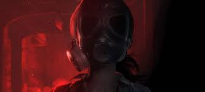
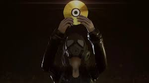

Fobia
-
SOBRE ESTE JOGO
Treze Trilhas é lar do Hotel Santa Dinfna, palco de diversos boatos, incluindo sumiços misteriosos e atividade paranormal. Em busca de um furo, o jornalista Roberto Leite Lopes viaja até Santa Catarina atrás de uma dica de Stephanie.
.jpg)
Suas habilidades investigativas o ajudarão a descobrir a verdade e a sobreviver quando encontra uma câmera que revela outras linhas do tempo, uma seita, experimentos com humanos e aparições. Resolva puzzles e procure algo para detê-las, enquanto passado, presente e futuro colidem.
• Explore um grande hotel – O Unreal Engine traz visuais realistas aterrorizantes a este jogo de terror em primeira pessoa.
• Sobreviva aos horrores – Procure suprimentos enquanto foge, se esconde ou luta contra monstros.
• Desvende o mistério – Mundos colidem numa narrativa cheia de puzzles e conspirações.
• Veja passado e futuro – Interaja com outras linhas do tempo usando uma câmera que conecta realidades paralelas e descubra os segredos ocultos nas paredes do hotel.
